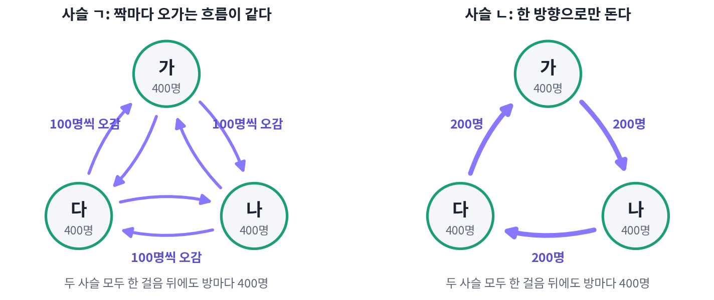

세부 균형: 짝마다 오가는 흐름이 같다
지금까지는 전이 행렬이 주어지고 정상 분포를 구했다. 샘플링에서는 일이 거꾸로다. 표본을 뽑고 싶은 분포가 먼저 있고, 그 분포를 정상 분포로 갖는 사슬을 만들어야 한다. 그런데 π = πP를 확인하려면 상태마다 「그 상태로 들어오는 모든 길」을 더해야 한다. 스핀 100개의 배치처럼 상태가 10^30가지를 넘으면 이 합을 더할 수 없다. 상태 전체를 보지 않고 둘씩만 보고도 확인할 수 있는 조건이 있을까?
방 셋을 오가는 두 사슬
1,200명이 방 가, 나, 다에 400명씩 있다. 사슬 ㄱ에서는 매 걸음 사람마다 1/2의 확률로 제자리에 있고, 나머지 1/2은 다른 두 방에 1/4씩 나뉘어 간다. 사슬 ㄴ에서는 1/2의 확률로 제자리에 있고, 나머지 1/2은 모두 시계 방향의 다음 방(가 → 나 → 다 → 가)으로 간다. 두 사슬 모두 한 걸음 뒤에도 방마다 400명이다. 사슬 ㄱ에서는 방마다 200명이 나가고 200명이 들어오며, 사슬 ㄴ에서도 방마다 200명이 나가고 앞 방에서 200명이 들어오기 때문이다. 정상 분포는 둘 다 고르게 1/3씩이다.
그런데 방 둘 사이의 흐름을 보면 두 사슬은 전혀 다르다. 사슬 ㄱ에서는 가에서 나로 100명이 가고 나에서 가로도 100명이 온다. 사슬 ㄴ에서는 가에서 나로 200명이 가고 나에서 가로는 한 명도 오지 않는다. 사람 수는 그대로인데 사람들이 한 방향으로 빙빙 돈다.

사슬 ㄱ처럼 정상 분포에서 어느 두 상태를 골라도 그 둘 사이를 오가는 흐름이 양쪽으로 같은 것을 세부 균형 (짝마다 오가는 흐름이 같음, detailed balance)이라 한다. 식으로는 이렇다.
세부 균형이 성립하면 π는 저절로 정상 분포다. 상태 j로 한 걸음에 들어오는 몫 Σᵢ π(i)P(i → j)의 항마다 세부 균형을 쓰면 Σᵢ π(j)P(j → i)가 되고, j에서 어디론가 가는 확률의 합은 1이므로 이것은 π(j)다. 들어오는 몫이 원래 있던 몫과 같으니 한 걸음 뒤에도 분포는 그대로다. 사슬 ㄴ이 보여 주듯 거꾸로는 성립하지 않는다. 세부 균형은 정상 분포가 되기 위한 충분조건이지 필요조건이 아니다.
이 조건이 쓸모 있는 까닭은 확인할 때 상태 둘만 보면 된다는 데 있다. 더 좋은 것은 분포의 비만 있으면 된다는 점이다. 식을 P(i → j)/P(j → i) = π(j)/π(i)로 고쳐 쓰면, 오른쪽에는 확률의 비만 남는다. 에너지가 0과 1인 두 상태라면 볼츠만 분포에서 그 비는 e^(−1) = 0.368이고, 이 값을 계산하는 데 정규화 합은 필요 없다.
세부 균형을 이루는 사슬에는 이름이 하나 더 있다. 정상 분포에서 사슬이 움직이는 모습을 영상으로 찍어 거꾸로 틀어도, 그것이 거꾸로 튼 영상인지 가려낼 수 없다. 짝마다 양쪽 흐름이 같으니 「i 다음 j」와 「j 다음 i」가 똑같이 자주 일어나기 때문이다. 그래서 이런 사슬을 되돌릴 수 있는 사슬(reversible chain)이라고도 부른다. 사슬 ㄴ의 영상은 거꾸로 틀면 사람들이 시계 반대 방향으로 돌아서 금방 들킨다.
문제 10. 두 도시의 이사
서울에 900만 명, 부산에 300만 명이 산다. 해마다 서울 사람의 1%가 부산으로, 부산 사람의 3%가 서울로 이사한다(다른 곳과 오가는 사람과 태어나고 죽는 사람은 셈하지 않는다). (가) 두 도시의 인구는 해마다 바뀌는가? (나) 부산에서 서울로 가는 비율이 4%가 되면 어떻게 되는가?

서울에서 부산으로 9만 명, 부산에서 서울로 9만 명이니까 그대로예요. (나)는 부산에서 12만 명이 빠져나가니까, 해마다 3만 명씩 부산이 줄어서 언젠가 부산이 비겠네요.

부산 인구가 줄면 부산에서 떠나는 사람 수는요?

아, 4%니까 사람이 줄면 떠나는 수도 줄어요. 1년 뒤 부산 297만, 2년 뒤 294.1만, 3년 뒤 291.4만으로 줄어드는 폭이 작아지네요. 비지는 않겠어요.

멈추는 곳은 서울 인구의 1%와 부산 인구의 4%가 같아지는 곳이니까, 부산이 전체의 1/5인 240만 명, 서울이 960만 명이야.

두 도시 사이에서는 늘 「주고받는 사람 수가 같아지는 곳」에서 멈추네요. 그럼 인구가 멈춰 있으면 언제나 짝마다 주고받는 수가 같은 거죠?

상태가 둘뿐이면 그래요. 한 도시의 인구가 그대로이려면 나간 사람과 들어온 사람이 같아야 하는데, 들어올 곳이 다른 도시 하나뿐이니까요. 도시가 셋이 되면요?

셋이면 서울 → 부산 → 대구 → 서울로 같은 수가 돌기만 해도 세 도시 인구가 다 그대로일 수 있어요. 앞의 방 셋 사슬 ㄴ처럼요. 짝마다 같지 않아도 멈출 수 있는 건 셋부터네요.

동아리 셋이 장비를 한 방향으로만 빌려주면, 다들 빌려준 만큼 받아서 장부는 맞아 보여도 실제로는 장비가 빙빙 도는 거랑 같네요.
문제 11. 고리를 돌며 곱하기
상태 가, 나, 다의 두 전이 행렬이 있다. P = [[0.5, 0.3, 0.2], [0.1, 0.6, 0.3], [0.4, 0.2, 0.4]], R = [[0.5, 0.3, 0.2], [0.15, 0.6, 0.25], [0.2, 0.5, 0.3]] (행은 지금 상태 가, 나, 다). (가) 각 행렬에서 가 → 나 → 다 → 가로 도는 확률의 곱과 가 → 다 → 나 → 가로 도는 확률의 곱을 견주라. (나) 세부 균형을 이루는 행렬이 있으면, 그 정상 분포를 연립방정식을 풀지 않고 구하라.
P부터 할게요. 0.3 × 0.3 × 0.4 = 0.036이고, 거꾸로는 0.2 × 0.2 × 0.1 = 0.004예요. R은 0.3 × 0.25 × 0.2 = 0.015, 거꾸로 0.2 × 0.5 × 0.15 = 0.015로 같아요.
두 곱이 같은지가 세부 균형과 무슨 상관일까요? 세부 균형이 성립한다고 하고, 가 → 나, 나 → 다, 다 → 가 세 짝의 식을 곱해 봐요.

π(가)P(가→나) = π(나)P(나→가), π(나)P(나→다) = π(다)P(다→나), π(다)P(다→가) = π(가)P(가→다)를 다 곱하면 양쪽의 π(가)π(나)π(다)가 지워지고, 한 방향으로 도는 곱 = 반대로 도는 곱만 남아요. 그러니까 두 곱이 다르면 세부 균형이 아니에요. P는 아니고 R은 될 수 있어요.
맞아요. P도 정상 분포는 있어요. 계산하면 (0.316, 0.386, 0.298)이고, 그때 가에서 나로 가는 흐름은 0.095, 나에서 가로 오는 흐름은 0.039라서 한 방향으로 도는 흐름이 남아요. 그럼 R의 정상 분포는요?

세부 균형이면 짝의 비가 바로 확률의 비예요. π(나)/π(가) = P(가→나)/P(나→가) = 0.3/0.15 = 2, π(다)/π(나) = 0.25/0.5 = 0.5니까 π는 1 : 2 : 1, 곧 (0.25, 0.5, 0.25)예요. 고유벡터를 구하지 않고 나눗셈 두 번으로 끝났어요.

확인해 보니 고유벡터도 (0.25, 0.5, 0.25)예요. 비만 보고 분포를 정했네요. 정규화는 마지막에 한 번만 하고요.
벡터장에서 닫힌 고리를 따라 적분한 값이 0이면 퍼텐셜이 있다고 배웠는데, 이것도 고리를 돌았을 때 곱이 1이면 상태마다 높이(로그 확률)를 매길 수 있다는 얘기네요.
문제 12. 스핀 둘의 깁스 샘플링
스핀 두 개 s₁, s₂(각각 +1 또는 −1)의 에너지가 E = −Js₁s₂ − b(s₁ + s₂), J = 1, b = 0.5이고 온도는 kT = 1이다. 깁스 샘플링은 스핀 하나를 1/2의 확률로 골라, 다른 스핀은 그대로 둔 채 고른 스핀만 조건부 확률로 다시 뽑는다. (가) 이 한 걸음은 볼츠만 분포에 대해 세부 균형을 이루는가? (나) 스핀을 고르는 대신 늘 스핀 1, 스핀 2의 순서로 한 번씩 다시 뽑는 것을 한 걸음으로 치면 어떤가?
네 배치의 에너지는 ++가 −2, +−와 −+가 1, −−가 0이에요. 볼츠만 분포는 0.810, 0.040, 0.040, 0.110이고요. 전이 행렬을 짜서 흐름 π(i)P(i→j)를 계산해 보면 대칭이에요. ++에서 +−로 가는 흐름도, 그 반대도 0.0192예요.
숫자로 확인했네요. 왜 대칭인지도 말해 볼까요? ++에서 +−로 가려면 스핀 2를 골라 −1로 뽑아야 해요.
스핀 2를 다시 뽑을 때는 스핀 1이 +1로 그대로니까, ++에서 출발하든 +−에서 출발하든 같은 조건부 확률로 뽑아요. 그러면 P(++ → +−)/P(+− → ++) = π(+−)/π(++)가 그대로 되고, 이건 세부 균형의 식이에요. 조건부 확률에 이미 분포의 비가 들어 있었네요.
(나)도 한 번씩 뽑는 건 같으니까 세부 균형이겠죠?
계산해 봐요.

정상 분포는 그대로 볼츠만 분포인데… 흐름이 대칭이 아니에요. 가장 크게 어긋난 칸이 0.026이나 차이 나요.
스핀 1을 먼저 바꾸고 스핀 2를 나중에 바꾸니까, 영상을 거꾸로 틀면 순서가 뒤집혀서 들켜요. 그래도 각 단계가 볼츠만 분포를 지키니까 둘을 이어 붙여도 지키고요. 세부 균형은 없어도 정상 분포는 맞는 경우예요.
그래요. 세부 균형은 확인하기 쉬운 충분조건이에요. 볼츠만 머신 같은 에너지 기반 모델에서 쓰는 깁스 샘플링은 실제로 이렇게 차례로 훑는 경우가 많은데, 그래도 틀린 분포를 뽑지 않는 까닭이 이거예요.
매 단계 검산이 맞으면 단계를 어떤 순서로 이어도 결과가 맞는 거네요. 순서를 바꿔 이어 붙인 걸 따로 검산할 필요는 없고요.